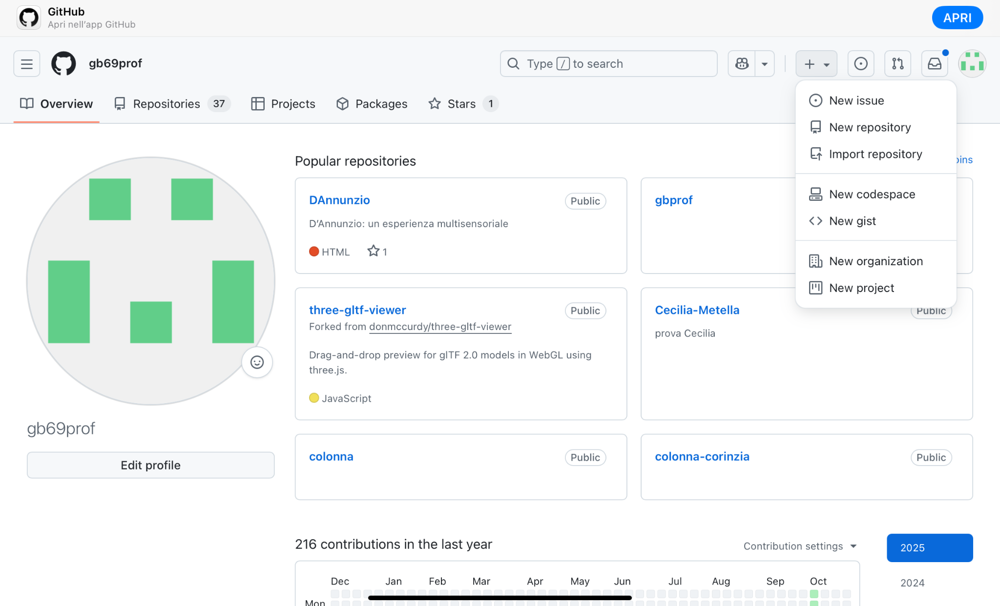
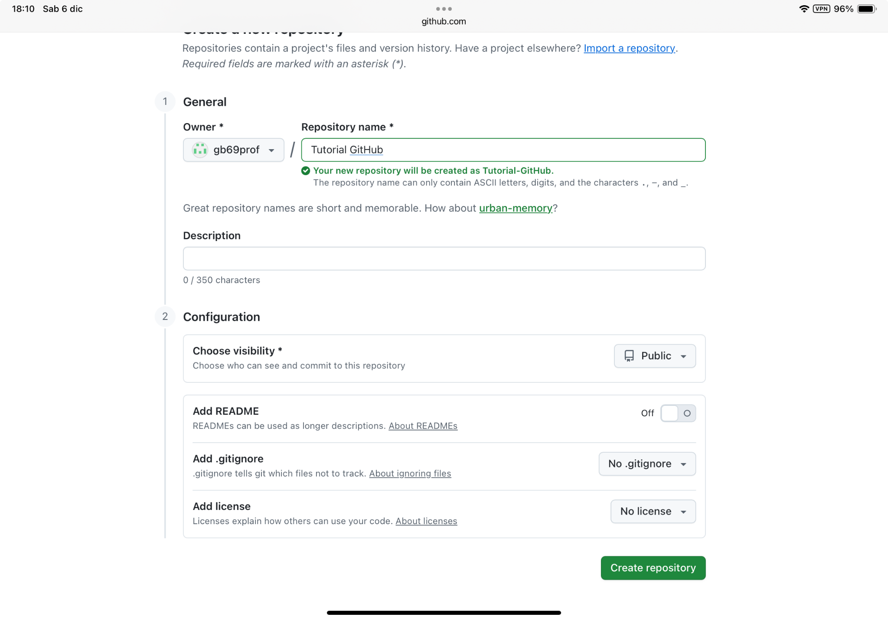
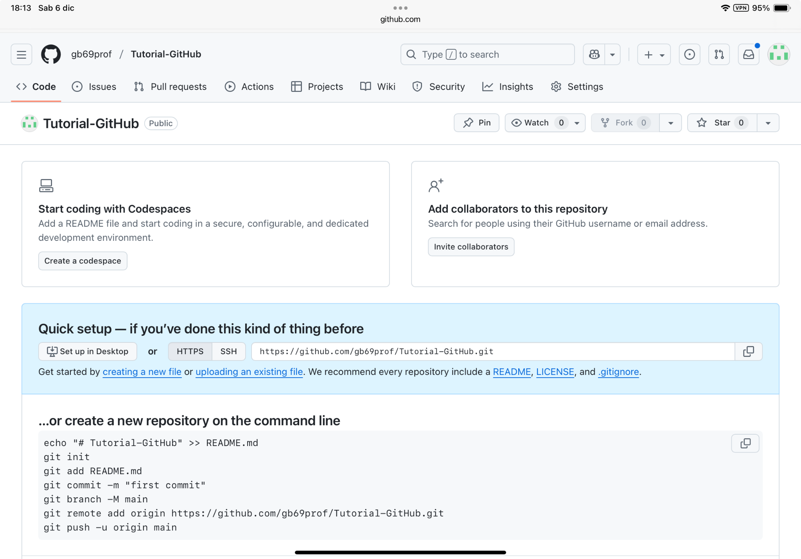
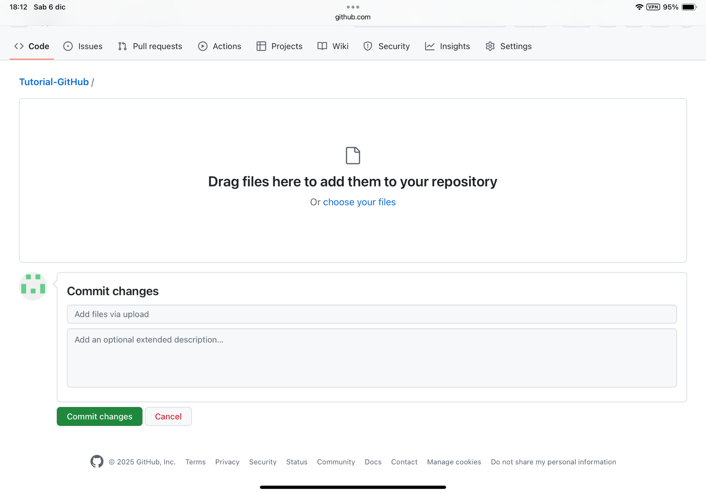
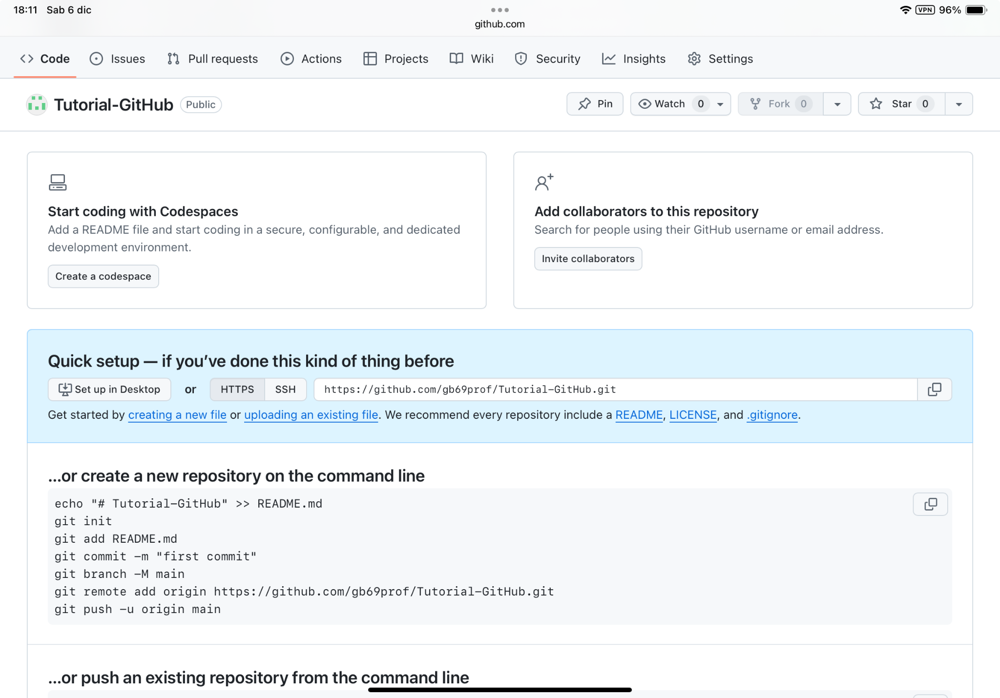
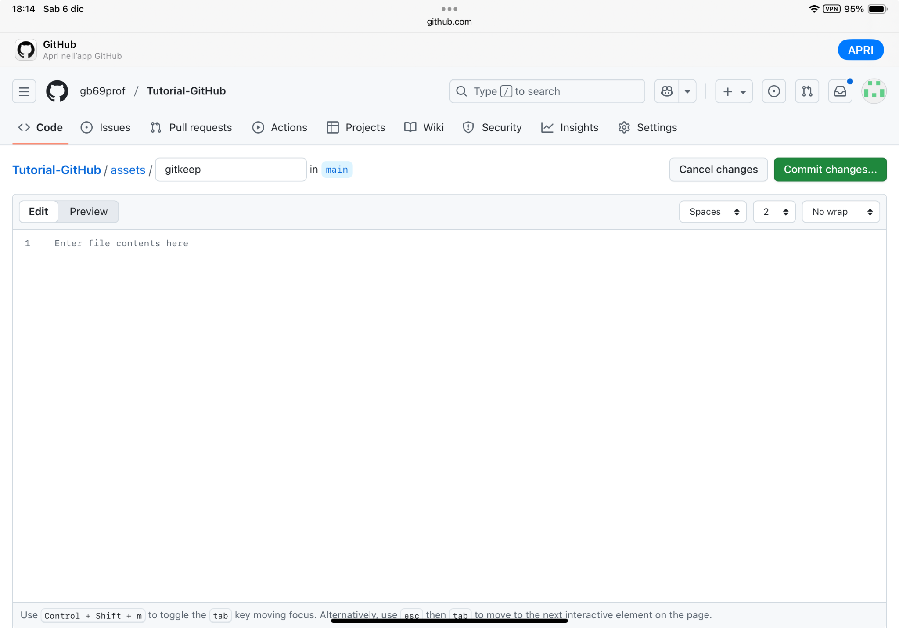
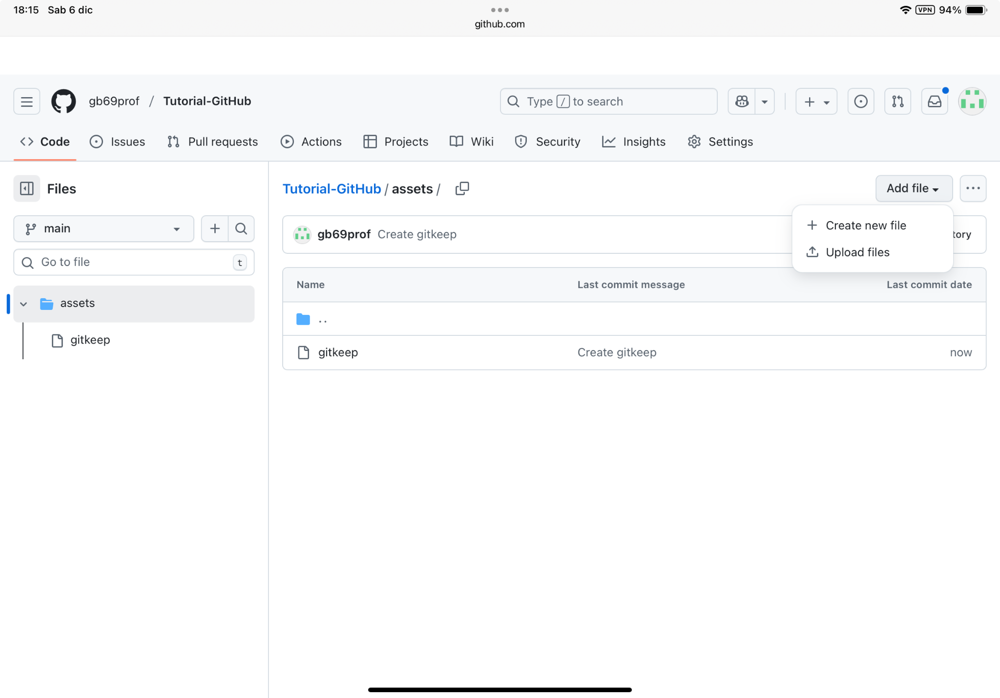
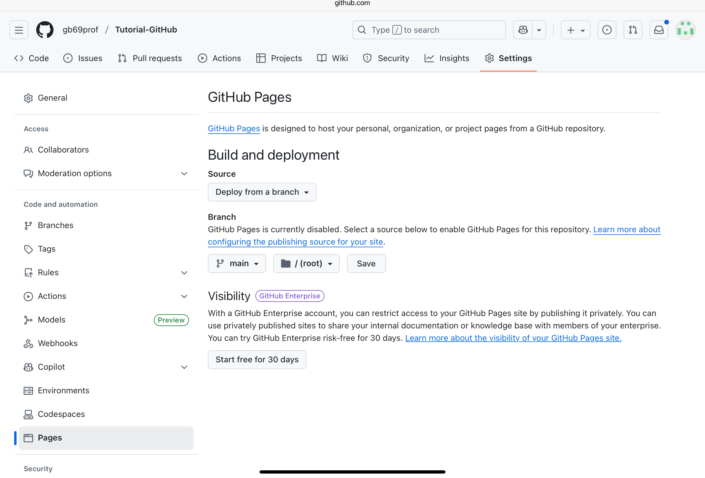

PRIMA PARTE – Il progetto
Parte 1 — Creare il progetto di base della web app (solo testo)
La web app che vogliamo costruire parte da un’unica cosa: il testo del documento Freud.pdf che useremo come base concettuale. In questa prima fase non esistono immagini, video, mappe o codice. Esiste solo il contenuto da riorganizzare.
L’obiettivo è semplice: preparare il materiale testuale che entrerà nella web app.
Per farlo occorre:
- Estrarre dal PDF i concetti fondamentali:
- Introduzione su Freud e sulla sua visione della mente;
- Sezione sull’Es;
- Sezione sull’Io;
- Sezione sul Super-Io.
- Riscrivere questi contenuti in forma chiara, didattica e destinata agli studenti.
- Mantenere la fedeltà al testo, ma con una struttura coerente a una web app.
Parte 2 — Preparare ChatGPT a leggere il documento e riscrivere il testo
Una volta scelto il materiale, bisogna istruire ChatGPT affinché legga il PDF, riconosca le sezioni e riscriva solo il testo necessario.
«Ti allego un documento PDF su Freud. Voglio che tu lo legga e che estragga TUTTI i contenuti necessari per creare le sezioni della web app: Introduzione – Es – Io – Super-Io. Riscrivi questi contenuti in forma sintetica e didattica. In questa fase devi produrre solo testo, senza immagini, senza video, senza mappe, senza codice.»
Parte 3 – Inserire immagini, video e geolocalizzazione
1. Allegare le immagini
assets/.»
2. Inserire un video YouTube
3. Geolocalizzazione (Vienna)
Parte 4 — Far generare a ChatGPT la web app completa (ZIP)
index.html, style.css, script.js,
più la cartella assets. Quando hai finito, consegna tutto in un file ZIP scaricabile.»
Caricare la web app su GitHub
1. Decomprimere lo ZIP
index.html style.css script.js assets/
2. Creare un nuovo repository



Caricare file e creare cartelle
1. Caricare index.html, style.css, script.js


2. Creare la cartella assets con .gitkeep

Caricare le immagini nella cartella assets

Pubblicare la web app con GitHub Pages
Pagina di configurazione

Link finale
https://tuo-nome.github.io/nome-del-repository